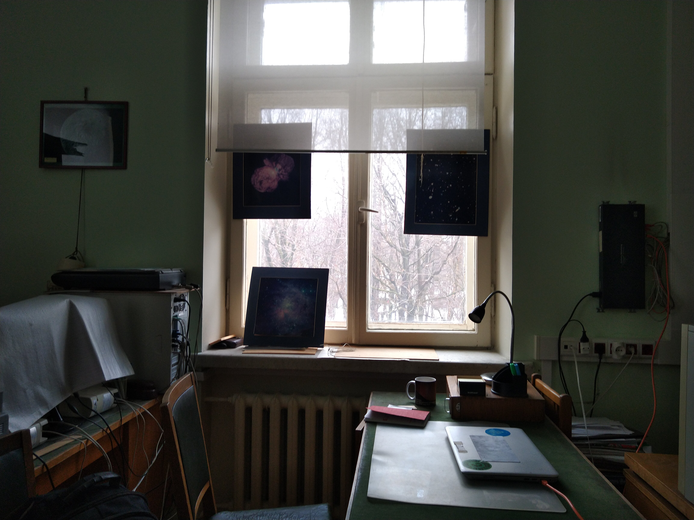
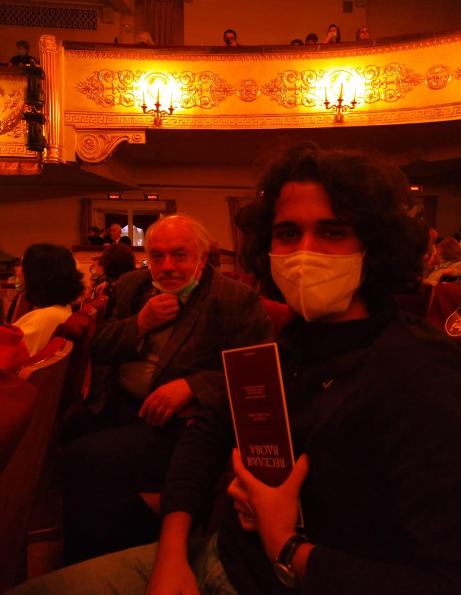
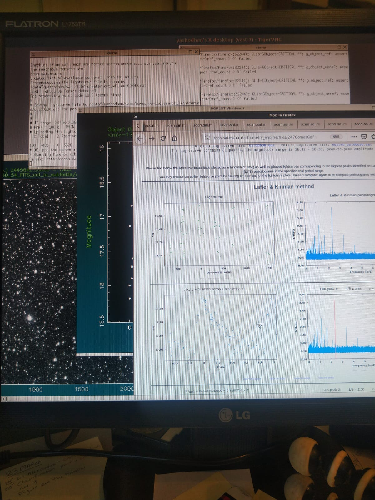
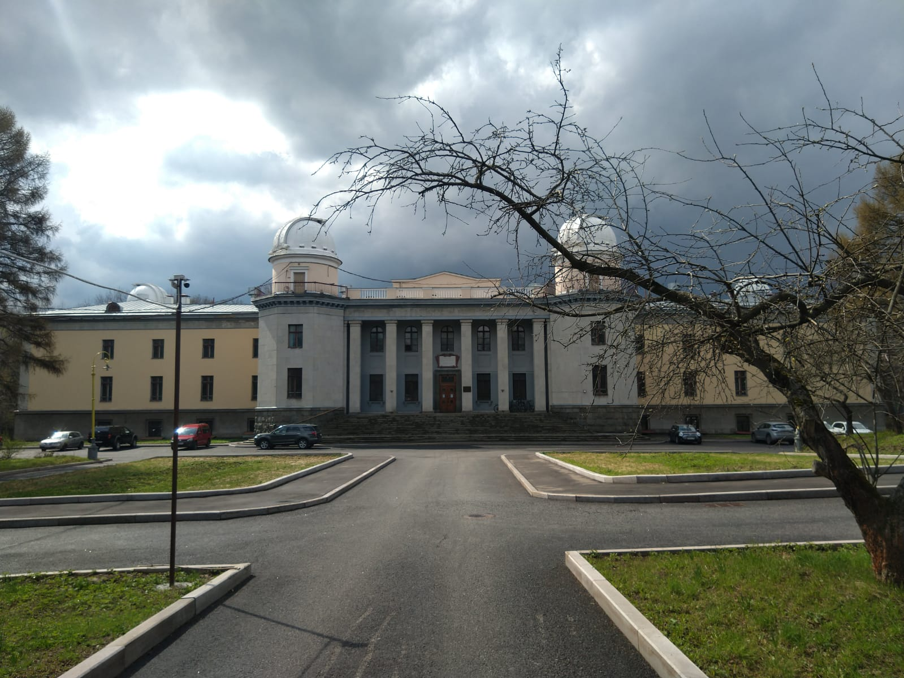
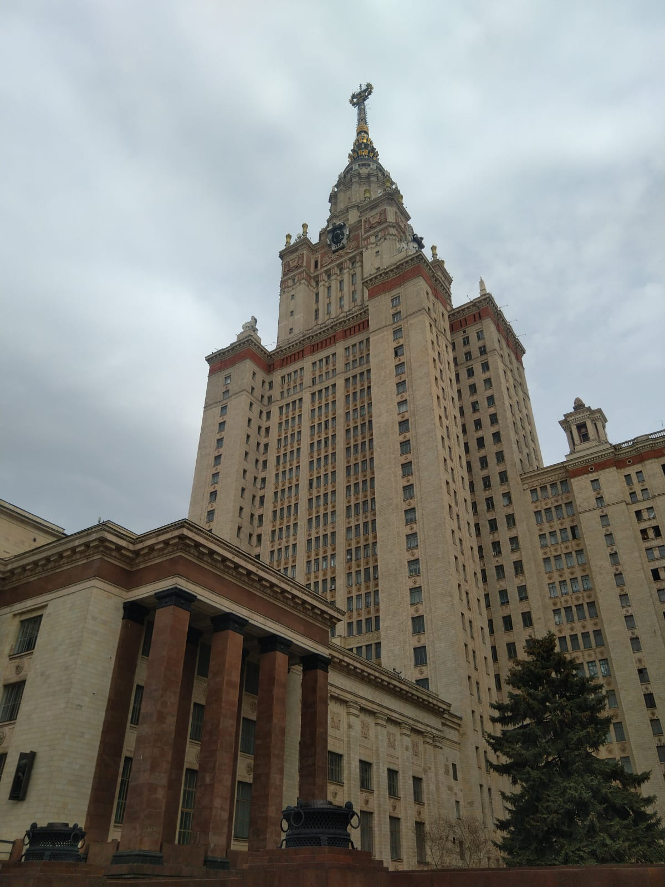
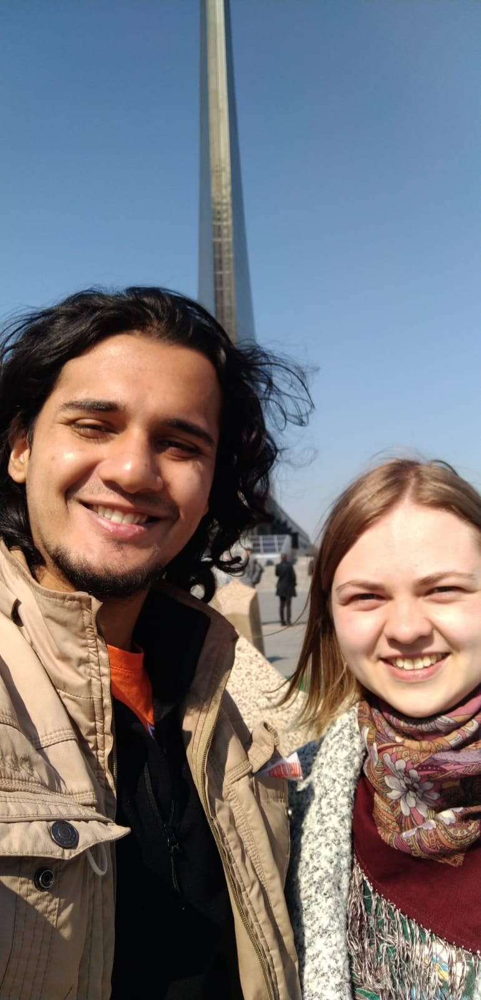
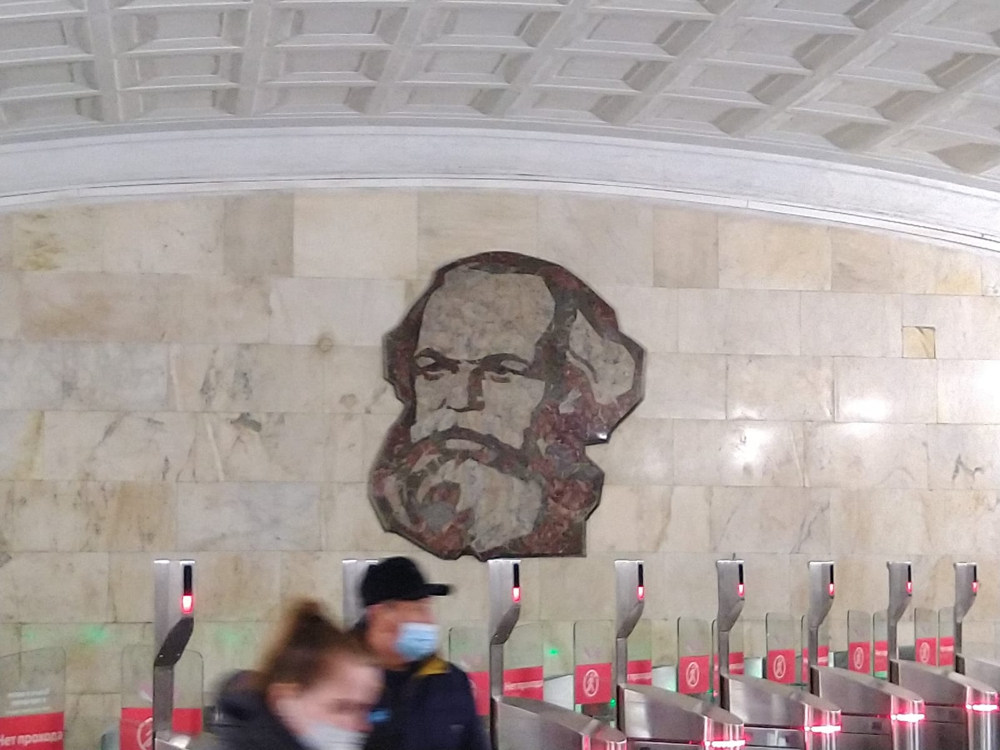
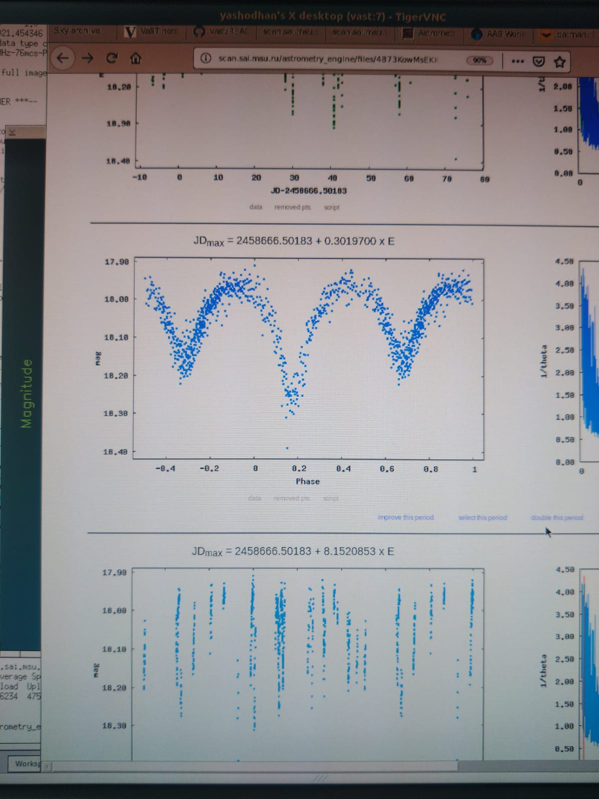

Yashodhan's Research
My research experience at Sternberg Astronomical Institute of the Moscow State University
| September 2020 - May 2021 |
My college allows students to do their master's thesis under the supervision of a professor external to the institute. I wanted to do
my thesis project in astrophysics, what we lack at Physics department IITM. I was very fortunate to have found Prof. Nikolay Samus as my advisor.
My co-advisor at home was Prof. Suresh Govindarajan. I was assisted by Dr. Alexandra Zubareva
and Dr. Kirill Sokolovsky in my project. The following is the abstract of my thesis: Variable stars are those stars whose apparent observed brightness varies with time. Lightcurves of these stars can show a remarkable elegance and periodic behaviour. We can see stars expanding and contracting in precise ways, stars eclipsing smaller stars and gigantic explosions on the surface of white dwarfs through this study. They provide time series data for studying stellar dynamics and evolution. Variable stars are also used for measuring distances to stars, star clusters or galaxies. Their study is essential in understanding the evolution of our galaxy. In this project we discovered new variable stars from scanned old photographs of a certain part of the sky. The photographic plates were borrowed from the Moscow plate collection, and they were taken between 1983 and 1996. The plates covered a large portion of the sky and the images were captured consistently. The text is a master’s project report. It prepares the background, exhibits the tools, illustrates the process of discovery, showcases the discoveries made in this project, explains the physics of variability and talks about the scope for machine learning applications. This was a successful project, in that we managed to discover new variable stars from archival photographic data.Download the whole report here: Report |
| 2021 Onwards | The project is not yet over, I have only been through 30% of the sub-fields. I intend to finish the entire field, and write a discovery publication. Additionally I am working on two machine learning problem statements involving classification of the variable stars. |
Gallery:
|  |  |
|  | |
|  |  |
|  |  |
|  |  |